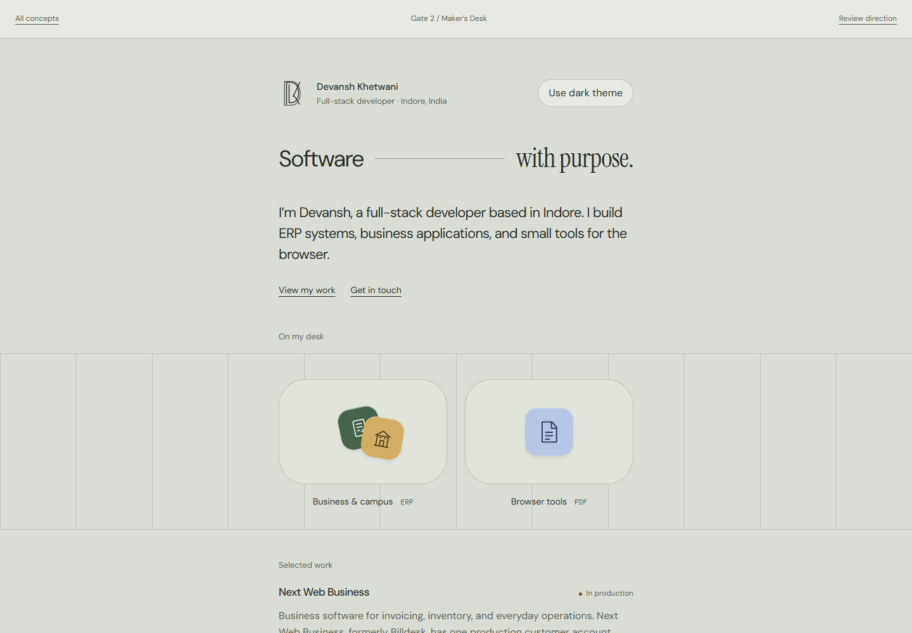

Maker’s Desk
A compact maker profile, a tactile shelf of original project icons, and a quiet record of the work.
Reference anchor: ByMayo’s compact profile and product shelf, with Tiny Computer’s concise software notes.
Explore Maker’s Desk